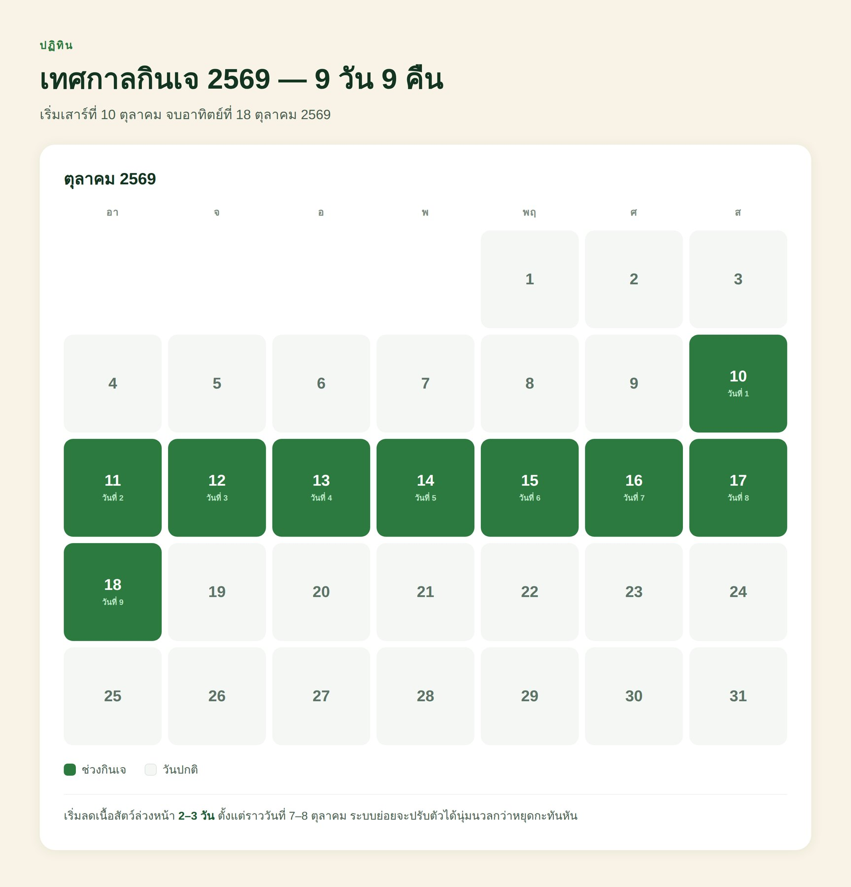
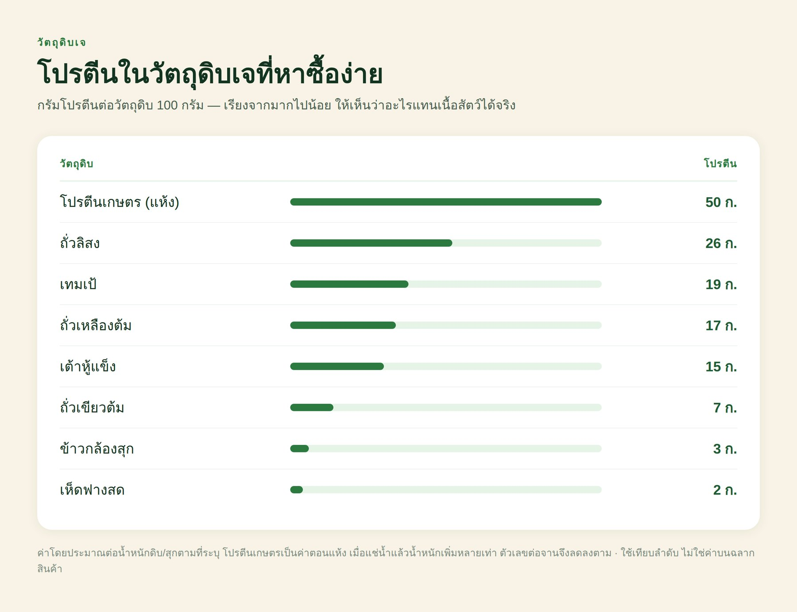
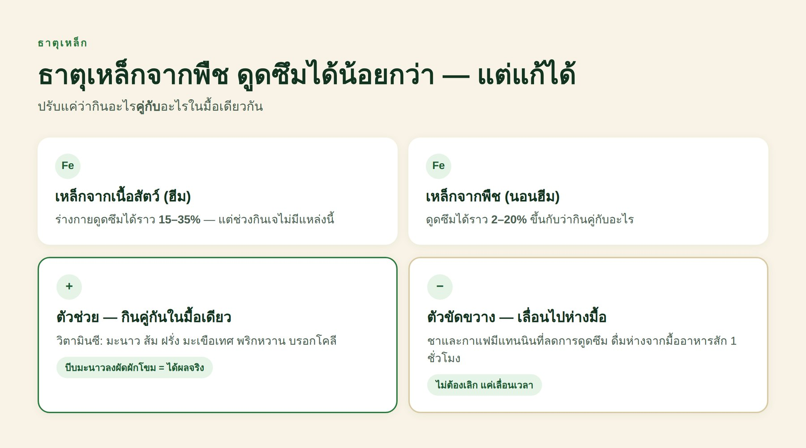
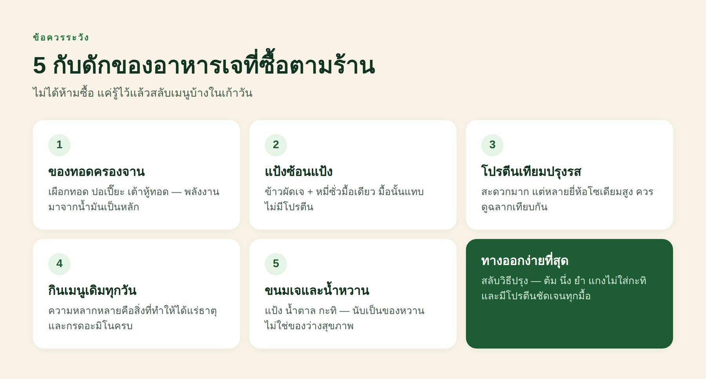
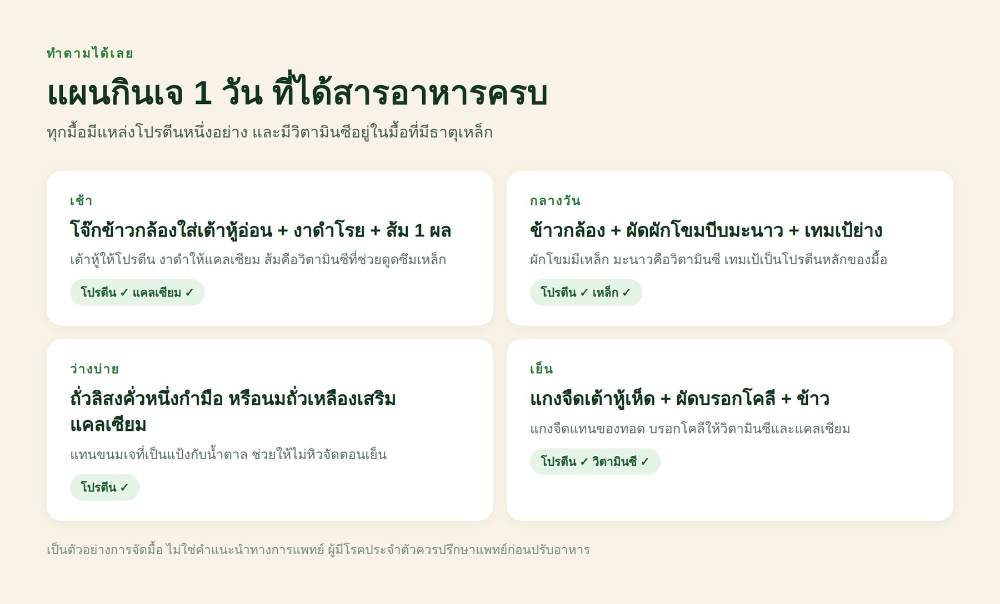
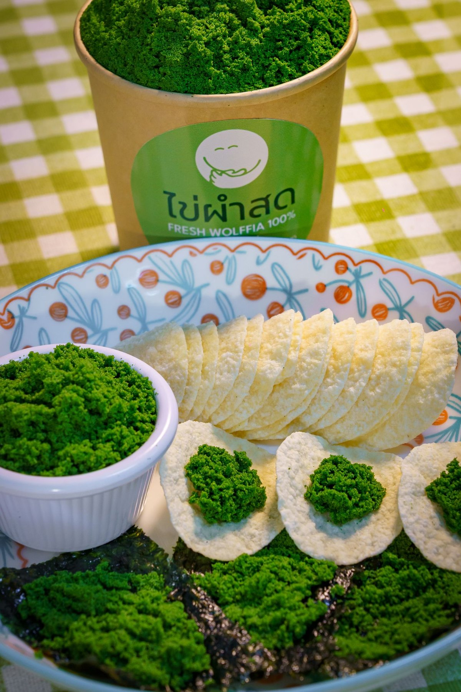

assets/images/journal-10.jpg
เทศกาลกินเจปีนี้ตรงกับ วันที่ 10–18 ตุลาคม 2569 และข่าวดีคือ กินเจ 9 วัน ไม่ทำให้ขาดวิตามินบี 12 เพราะตับเก็บสำรองไว้ได้นานเป็นปี สิ่งที่พลาดได้จริงในเก้าวันคือ โปรตีน กับ ธาตุเหล็ก — และมักไม่ใช่เพราะอาหารเจให้ไม่ได้ แต่เพราะเมนูเจที่หาซื้อง่ายที่สุดคือแป้งกับของทอด บทความนี้บอกว่าต้องเติมอะไร และมีแผนกินหนึ่งวันให้ทำตามได้เลย
หลายคนคิดว่ากินเจคือกินมังสวิรัติ แต่จริง ๆ แล้วเจเข้มกว่า เพราะนอกจากไม่กินเนื้อสัตว์และผลิตภัณฑ์จากสัตว์ทุกชนิด (รวมนม ไข่ น้ำผึ้ง น้ำปลา กะปิ) ยังงดสิ่งที่เรียกว่า ผักฉุน 5 อย่าง คือ กระเทียม หัวหอม หลักเกียว กุยช่าย และใบยาสูบ
ข้อนี้สำคัญกว่าที่คิด เพราะกระเทียมกับหัวหอมเป็นฐานรสของอาหารไทยและอาหารวีแกนเกือบทุกสูตร พอตัดออก คนกินเจจำนวนมากเลยหนีไปพึ่งเมนูที่ปรุงง่ายที่สุด — ผัดผักกับข้าว และของทอด ซึ่งเป็นจุดเริ่มของปัญหาโภชนาการทั้งหมดในเก้าวันนี้

assets/images/journal-10-calendar.jpg
คนที่กินเจแล้วรู้สึกทรมานในสองสามวันแรก ส่วนใหญ่ไม่ได้แพ้การกินเจ แต่เปลี่ยนกะทันหันเกินไป ร่างกายกับระบบย่อยต้องการเวลาปรับตัว และตู้เย็นที่ไม่มีของเจอยู่เลยก็บังคับให้ต้องซื้อของทอดหน้าปากซอยทุกมื้อ
ในมื้อปกติ โปรตีนมักมาจากเนื้อสัตว์หรือไข่ก้อนเดียวจบ พอตัดออกแล้วไม่ได้ใส่อะไรมาแทน มื้อนั้นก็เหลือแค่ข้าวกับผัก หลักง่าย ๆ ที่ใช้ได้ตลอดเก้าวันคือ ทุกมื้อต้องมีแหล่งโปรตีนอย่างน้อยหนึ่งอย่าง ที่ไม่ใช่ผัก

assets/images/journal-10-protein.jpg
ตารางข้างบนเรียงจากมากไปน้อยต่อน้ำหนักเท่ากัน จะเห็นว่า เต้าหู้แข็ง เทมเป้ และโปรตีนเกษตร ทำงานแทนเนื้อสัตว์ได้จริง ส่วนเห็ดกับผักใบ — ถึงจะดีต่อสุขภาพแค่ไหน — ให้โปรตีนน้อยเกินกว่าจะนับเป็นแหล่งโปรตีนหลักของมื้อ
ธาตุเหล็กมีสองแบบ แบบที่มาจากเนื้อสัตว์เรียก ฮีม (heme) ร่างกายดูดซึมได้ราว 15–35% ส่วนแบบที่มาจากพืชเรียก นอนฮีม (non-heme) ดูดซึมได้เพียงราว 2–20% แปลว่าถึงจะกินผักใบเขียวเยอะแค่ไหน สิ่งที่ร่างกายได้จริงอาจน้อยกว่าที่คิดมาก

assets/images/journal-10-iron.jpg
ข่าวดีคือเรื่องนี้แก้ได้ด้วยการจัดจานเท่านั้นเอง วิตามินซีเพิ่มการดูดซึมธาตุเหล็กจากพืชได้หลายเท่า ถ้ากินอาหารที่มีธาตุเหล็กคู่กับของที่มีวิตามินซีในมื้อเดียวกัน เช่น บีบมะนาวลงผัดผักโขม กินส้มหรือฝรั่งหลังมื้อ หรือใส่พริกหวานลงไปด้วย
และอีกด้านหนึ่งที่คนมองข้าม — ชาและกาแฟลดการดูดซึมธาตุเหล็ก เพราะมีแทนนิน ถ้าติดดื่มระหว่างมื้อ ลองเลื่อนไปดื่มห่างจากมื้ออาหารสักหนึ่งชั่วโมงในช่วงเก้าวันนี้
เก้าวันไม่ต้องห่วงครับ ร่างกายเก็บสำรองวิตามินบี 12 ไว้ที่ตับได้ในระดับที่ใช้ได้นานเป็นปี การงดอาหารจากสัตว์ชั่วคราวเก้าวันจึงไม่ทำให้ระดับในเลือดเปลี่ยนอย่างมีนัยสำคัญ ใครที่เห็นโฆษณาชวนให้กลัวว่ากินเจแล้วจะขาดบี 12 ทันที — อันนั้นเกินจริง
เรื่องนี้จะกลายเป็นเรื่องจริงก็ต่อเมื่อ กินต่อเนื่องเป็นปี เพราะพืชแทบทุกชนิดไม่มีวิตามินบี 12 ตามธรรมชาติ คนที่กินมังสวิรัติหรือวีแกนระยะยาวจึงต้องวางแผนเรื่องนี้อย่างจริงจัง — เราเขียนไว้ละเอียดแล้วในบทความเรื่องวิตามินบี 12

assets/images/journal-10-traps.jpg
ไม่ได้แปลว่าห้ามซื้อ อาหารเจตามร้านสะดวกและอร่อย แต่ถ้ากินทั้งเก้าวันโดยไม่ระวังเลย สิ่งที่ได้มักเป็นแป้งกับน้ำมันมากกว่าสารอาหาร สังเกตห้าข้อนี้แล้วสลับเมนูบ้างก็พอ

assets/images/journal-10-day.jpg
แผนนี้ไม่ได้ต้องการวัตถุดิบหายาก ทุกอย่างหาได้ในตลาดสดหรือซูเปอร์ทั่วไป จุดสำคัญคือ ทุกมื้อมีแหล่งโปรตีนชัดเจนหนึ่งอย่าง และ มีของที่มีวิตามินซีอยู่ในมื้อที่มีธาตุเหล็ก สองข้อนี้ทำได้ ก็ผ่านเก้าวันได้สบาย
นี่คือเรื่องที่คนเจอบ่อยที่สุดและแทบไม่มีใครพูดถึง หลายคนเริ่มกินเจด้วยความคาดหวังว่าจะเบาขึ้น แต่พอครบเก้าวันกลับหนักขึ้น เหตุผลไม่ได้ลึกลับเลย — เนื้อสัตว์ถูกแทนที่ด้วยแป้งและน้ำมัน ไม่ใช่ผัก
ลองนึกภาพจานเจทั่วไป — ผัดหมี่ซั่ว ข้าวผัดเจ เผือกทอด ปอเปี๊ยะทอด เต้าหู้ทอด ขนมเจ เกือบทุกอย่างผ่านน้ำมัน และน้ำมันหนึ่งช้อนโต๊ะให้พลังงานราว 120 กิโลแคลอรี โดยที่ไม่ทำให้อิ่มเลย ขณะที่โปรตีนซึ่งเป็นตัวช่วยให้อิ่มนานกลับหายไปพร้อมเนื้อสัตว์
วิธีแก้ไม่ใช่กินน้อยลง แต่คือสลับวิธีปรุง — ต้ม นึ่ง ยำ แกงไม่ใส่กะทิ สลับกับของทอดบ้าง และเติมโปรตีนให้ครบทุกมื้อตามที่บอกไว้ข้างบน ความอิ่มจะกลับมาเอง แล้วของว่างระหว่างวันจะลดลงตามไปด้วย
การงดนมและผลิตภัณฑ์จากนมตลอดเก้าวันทำให้แหล่งแคลเซียมหลักของคนส่วนใหญ่หายไปทั้งก้อน เก้าวันยังไม่กระทบกระดูกก็จริง แต่ถ้าคิดจะกินต่อ นี่คือข้อที่ต้องวางแผนพอ ๆ กับบี 12
แหล่งแคลเซียมที่กินได้ในช่วงเจ ได้แก่ เต้าหู้ที่ใช้แคลเซียมซัลเฟตเป็นตัวจับ (ดูที่ฉลากส่วนผสม) งาดำ ผักใบเขียวเข้ม เช่น คะน้า ใบยอ ตำลึง และนมพืชที่เสริมแคลเซียม ข้อควรรู้คือผักที่มีออกซาเลตสูงอย่างผักโขมนั้นมีแคลเซียมก็จริง แต่ร่างกายดูดซึมได้น้อย จึงนับเป็นแหล่งหลักไม่ได้
ไม่จำเป็นครับ ถ้ากินให้ครบหมู่และมีแหล่งโปรตีนทุกมื้อ ร่างกายรับมือเก้าวันได้สบาย อาหารเสริมจะเริ่มมีเหตุผลเมื่อกินมังสวิรัติต่อเนื่องเป็นเดือนเป็นปี โดยเฉพาะวิตามินบี 12
ทั้งคู่มาจากถั่วเหลืองและให้โปรตีนใกล้เคียงกัน ต่างกันที่โปรตีนเกษตรเก็บได้นานและราคาถูกกว่า ส่วนเต้าหู้สดกว่าและแปรรูปน้อยกว่า ถ้าซื้อโปรตีนเกษตรสำเร็จรูปที่ปรุงรสมาแล้ว ให้ดูปริมาณโซเดียมบนฉลากด้วย
มักเกิดจากใยอาหารที่เพิ่มขึ้นเร็วเกินไปโดยที่ดื่มน้ำไม่พอ ลองเพิ่มน้ำดื่ม และถ้ากินถั่วเมล็ดแห้ง ให้แช่น้ำทิ้งไว้ก่อนแล้วเทน้ำแช่ทิ้ง จะช่วยลดอาการอืดได้มาก
ได้ครับ ไข่ผำเป็นพืชน้ำ ไม่ใช่เนื้อสัตว์และไม่ใช่ผักฉุนทั้งห้าชนิด จึงไม่ขัดกับหลักการกินเจ
หลายคนเริ่มจากกินเจเก้าวันแล้วติดใจ อยากกินมังสวิรัติต่อ ซึ่งเป็นเรื่องดี แต่โจทย์จะเปลี่ยนไปคนละแบบ เพราะสิ่งที่ร่างกายเก็บสำรองไว้ได้จะเริ่มหมดลง สี่ข้อที่ควรวางแผนคือ
และข้อที่ควรทำที่สุดคือ ตรวจเลือดปีละครั้ง ดูระดับวิตามินบี 12 และธาตุเหล็ก การเดาเอาจากความรู้สึกใช้ไม่ได้กับสารอาหารสองตัวนี้ เพราะอาการมาช้ามากจนไม่ทันสังเกต

assets/images/wolffia-serving.jpg
ไข่ผำ (Wolffia) เป็นพืชน้ำ ไม่ใช่ผักฉุนทั้งห้า จึงกินได้ในช่วงเทศกาลกินเจ ผลวิเคราะห์จากห้องปฏิบัติการที่ได้รับการรับรอง ISO/IEC 17025 ของผงไข่ผำอบแห้งจากฟาร์มเราระบุว่า ในผง 100 กรัม มีโปรตีน 40.6 กรัม และวิตามินบี 12 30.8 ไมโครกรัม ซึ่งเป็นตัวเลขจากตัวอย่างจริงของเรา ไม่ใช่ค่าอ้างอิงของไข่ผำทั่วไป
ปริมาณที่ได้จริงต่อหนึ่งหน่วยบริโภคให้ดูจากฉลากบนบรรจุภัณฑ์ และถ้าอยากเห็นเอกสารตัวจริง เราเปิดให้อ่านฉบับเต็มไว้ที่หน้ามาตรฐานและใบรับรอง ทั้งผลวิเคราะห์ ALS ผลตรวจจุลินทรีย์ และหนังสือรับรองวีแกน